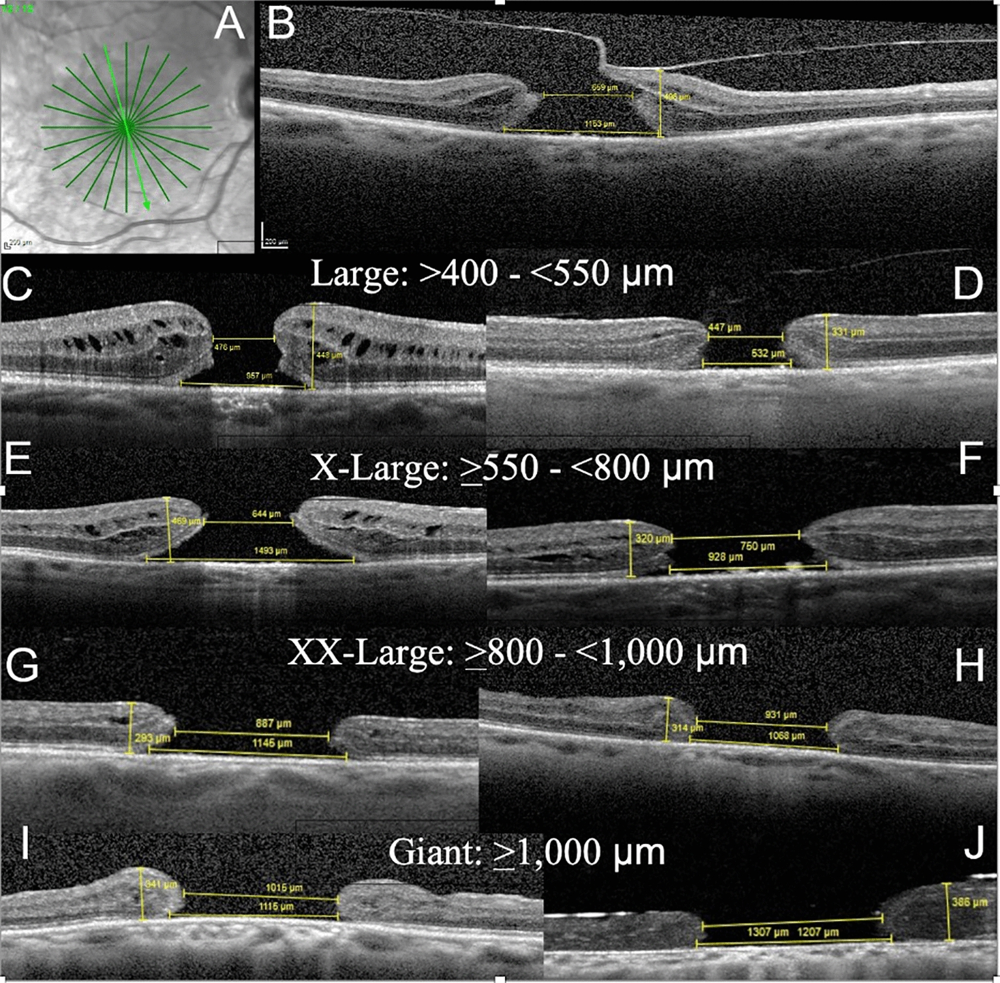
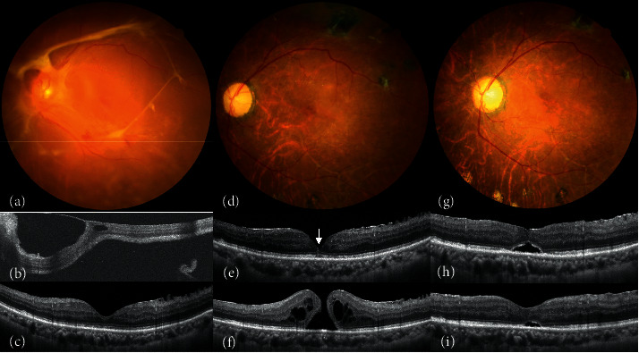
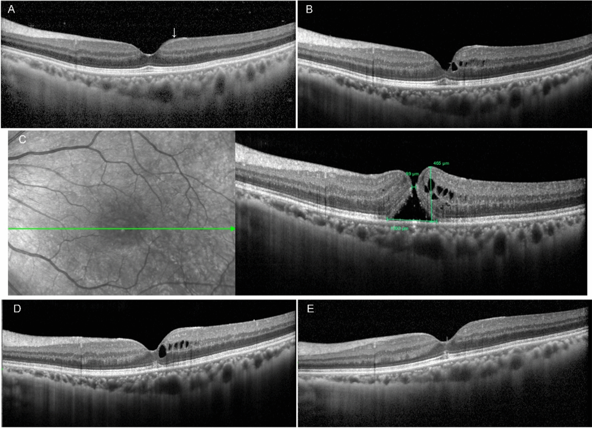

1879 — Màng đứt hoàng điểm sau mổ bong võng mạc: theo dõi 2–3 tháng hay mổ ngay? Mốc MLD 128–162 µm so với 387–589 µm
Tags: pattern:lo-hoang-diem pattern:lo-toan-bo-hoang-diem pattern:co-keo-tiep-tuyen pattern:vanh-dich-duoi-vong-mac pattern:phu-hoang-diem-dang-nang pattern:tang-sinh-truoc-vong-mac vung:hoang-diem vung:vong-mac vung:dich-kinh protocol:OCT protocol:PPV protocol:ILM-peel protocol:khi-tamponade score:IVTS score:CLOSE
Mức chắc chắn (certainty): tổng hợp y văn (literature synthesis) — ghép ca nguyên văn có ảnh màng đứt hoàng điểm thứ phát (secondary FTMH, sFTMH) sau cắt dịch kính vì bong võng mạc, tự đóng trong 3 tháng (OCT 5 thì A–E, PMC13464826, CC BY-NC-ND), ca nguyên văn dấu nứt hoàng điểm (foveal crack sign) đi trước màng đứt (OCT, PMC9173914, CC BY 4.0), phân loại CLOSE trên 31 bài / 1.135 mắt (OCT 4 nhóm kích thước, PMC9885593, CC BY 4.0), nghiên cứu bệnh–chứng 44 vs 44 mắt về yếu tố nguy cơ (PMC12336166, CC BY-NC), và 60 mắt so sánh khí SF₆ với C₃F₈ (PMC12580656, CC BY). Phần “chọn theo dõi hay mổ” là tổng hợp có suy luận, đã ghi rõ chỗ chưa có RCT.
Câu chốt: sau khi võng mạc đã áp tốt, một khuyết toàn bộ võng mạc ở hõm hoàng điểm vẫn có thể tự đóng — nhưng chỉ ở nhóm nhỏ: lỗ tự đóng có MLD 128–162 µm, lỗ không đóng 387–589 µm. Nghĩa là không phải mọi màng đứt sau mổ bong võng mạc đều mổ ngay, và cũng không được chờ vô hạn: tự đóng muộn nhất khoảng 4 tháng, tái mở tới 71%, còn mổ thì đóng sớm hơn nhiều (trung vị 18,5 ngày vs 56 ngày). Khung thực hành: theo dõi OCT mỗi 4 tuần trong 2–3 tháng nếu lỗ ≤ 250 µm, có phù hoàng điểm dạng nang (CME) hoặc tăng sinh trước võng mạc (epiretinal proliferation, EP) và triệu chứng nhẹ; mổ khi lỗ lớn ra, thị lực giảm, hoặc xuất hiện dấu nứt hoàng điểm.
Phân vai với bài khác: 1429 phủ lỗ thứ phát ĐÃ thất bại điều trị trên mắt mất ILM/bơm dầu → màng ối, ghép võng mạc tự thân (ART); 1877 phủ giọt PFCL dưới võng mạc (nguyên nhân cơ học của chính lỗ này); 1865 phủ bong tái phát sau tháo dầu; 1467 phủ màng trước võng mạc; 1875 phủ CME trên mắt bơm dầu. Bài này chỉ trả lời một câu: lỗ vừa mới xuất hiện — chờ hay mổ, chờ bao lâu, và chờ đến mốc nào thì dừng.
1. Tổng quan bệnh học – cơ chế hình ảnh (TẠI SAO lỗ lại hình thành SAU khi võng mạc đã áp, và TẠI SAO nó có thể tự đóng)
1.1 Dịch tễ — ba con số phải nhớ
| Đại lượng | Giá trị | Nguồn |
|---|---|---|
| sFTMH sau mọi ca cắt dịch kính (PPV) | 0,24–0,4% | PMC13464826 (tổng quan) |
| sFTMH sau PPV vì bong võng mạc có lỗ (RRD) | 0,28–1,93% | PMC13464826 |
| Tỷ lệ sFTMH mà chỉ định mổ ban đầu là RRD | 76,7% (46 mắt trong một loạt) | PMC13464826 |
| Thời điểm hình thành (nghiên cứu bệnh–chứng 44 ca) | trung vị 6,3 tháng sau mổ | PMC12336166 |
| Thời điểm hình thành (loạt lớn) | trung bình 42,4 tháng; khoảng 1 ngày → > 11 năm | PMC13464826 |
| Tự đóng sau khi lỗ xuất hiện | 5–18% | PMC13464826 |
- Hai đỉnh thời gian, hai cơ chế khác nhau. Nhóm sớm (< 3 tháng): sang chấn mổ, lực co kéo dịch kính còn sót, viêm cấp, thay đổi do tamponade — đây là nhóm chiếm phần lớn ca báo cáo. Nhóm muộn (nhiều tháng → nhiều năm): màng trước võng mạc (ERM) tiến triển co dần, EP, phù nang mạn.
- Yếu tố nguy cơ có số (bệnh–chứng 44 vs 44 mắt):
| Yếu tố (trước/sau mổ bong võng mạc) | Có lỗ (case) | Không lỗ (control) | p |
|---|---|---|---|
| Dùng PFCL trong mổ ban đầu | 16% | 0% | 0,012 |
| CME xuất hiện sau mổ, trước khi có lỗ | 75,9% | 9,1% | < 0,001 |
| ERM xuất hiện sau mổ | 61% | 43% | 0,057 |
→ CME sau mổ là yếu tố nguy cơ mạnh nhất, và PFCL là yếu tố mổ-trong-mổ duy nhất có ý nghĩa. Điều này nối trực tiếp 1877: giọt PFCL dưới võng mạc tạo vòm căng + võng mạc phủ mỏng 32 µm rồi để lại màng đứt khi giọt thoát.
1.2 Bốn cơ chế — và vì sao cùng một “lỗ” lại có 4 kiểu hình ảnh
- Co kéo tiếp tuyến (tangential traction) do ERM/EP. ERM co song song mặt võng mạc → kéo hai bờ lỗ xích lại nhưng đồng thời bóc tách võng mạc trong; đó là lý do sFTMH có vành dịch dưới võng mạc quanh bờ (cuff) — khác với lỗ nguyên phát vốn không có cuff rõ. Trên OCT, cuff là khoang giảm phản xạ hình nêm nâng mép lỗ lên, và chính lực nâng này làm mép nằm ngoài mặt phẳng RPE → đo MLD sai nếu không đo đúng mặt phẳng RPE.
- Thoái hóa nang trung tâm CME → vỡ nang. Hoàng điểm đã bong chịu thiếu máu–thiếu oxy trong lúc bong; khi áp lại, hàng rào máu–võng mạc còn yếu → dịch nội bào tích trong lớp hạch/INL. Các nang hợp nhất rồi vỡ vào hõm → khuyết toàn bộ. Y văn ghi phù hoàng điểm sau mổ làm tăng nguy cơ mở lại lỗ với OR ~7. Đây là lý do điều trị CME là điều trị dự phòng lỗ.
- Sang chấn mổ trực tiếp. Dòng tưới tốc độ cao đập vào hoàng điểm, dụng cụ chạm hoàng điểm, lực kéo quá mức khi bóc màng giới hạn sau (posterior hyaloid), độc tính ánh sáng của laser, viêm do dầu silicone. Nhóm này cho lỗ ngay 1 ngày–vài tuần.
- Nền võng mạc đã “yếu cơ học”. Võng mạc từng bong bị phù rồi teo, mất ILM (nếu đã bóc), mỏng ở hõm (~0,25 mm là độ dày hõm bình thường) → cùng một lực co kéo, võng mạc đã bong sẽ thủng trước võng mạc lành. Đây là lý do cùng MLD, lỗ sau bong võng mạc có tiên lượng khác lỗ nguyên phát.
1.3 Vật lý OCT: vì sao “lỗ” là khoang TRỐNG, còn “nang” là khoang GIẢM phản xạ, và “hạt” lại TĂNG phản xạ
- OCT hoàng điểm dùng ánh sáng ~840 nm (SD-OCT). Tín hiệu đến từ tán xạ ngược của các mặt phân cách chiết suất khác nhau.
- Khuyết toàn bộ võng mạc = không có mô → gần như không có tín hiệu tán xạ → khoang trống/đen, và bờ lỗ là vách mô dày — “hai cột” hai bên. Đây là chốt hình ảnh của lỗ thật: mất liên tục từ ILM đến RPE.
- Dịch trong nang (CME) = nước, không tán xạ → khoang giảm phản xạ, nhưng có vách tế bào bao quanh → vẫn thấy vách ngăn khác với khoang trống hoàn toàn của lỗ.
- Hạt tăng phản xạ trên RPE ở đáy lỗ = đoạn ngoài tế bào cảm thụ bị đứt, thoái hóa (outer segment debris) — vật liệu có màng lipid + sắc tố nên tán xạ mạnh. Dấu này gặp 50% ở sFTMH vs 33% ở lỗ nguyên phát: nó vừa là bằng chứng tổn thương tế bào cảm thụ, vừa là dấu hiệu quá trình sửa chữa đang chạy.
- EP/ERM = mô tăng sinh tế bào Müller + collagen trên mặt võng mạc, phản xạ trung bình, dày vài chục µm — dày hơn và “đặc” hơn dịch kính còn sót (vốn rất mỏng, phản xạ thấp). Phân biệt hai thứ này quyết định có mổ hay không.
- Vì sao lỗ nhỏ tự đóng được: tế bào Müller và glial bắc cầu qua khuyết; khoảng cách cần bắc cầu tỉ lệ với MLD. MLD ~130 µm = cầu ngắn, xác suất cao; MLD ~500 µm = cầu dài, tế bào không với tới → dải MLD 128–162 µm vs 387–589 µm chính là biểu hiện lâm sàng của giới hạn hình học này.
1.4 Vì sao “đóng” không đồng nghĩa “nhìn thấy”
Sau khi lỗ đóng, các lớp ngoài hồi phục không đồng đều:
- ONL (nhân ngoài): 100% phục hồi; ELM (màng giới hạn ngoài): ~90%; EZ (ellipsoid zone): 60% (Morawski) và 33% (Zhang).
- Nghĩa là: đóng lỗ là điều kiện cần, không phải điều kiện đủ. Nói trước với bệnh nhân: lỗ đóng nhưng EZ khuyết → thị lực có thể không cải thiện tương xứng, và ám điểm trung tâm có thể còn.
2. Mẫu hình + chẩn đoán phân biệt theo vị trí và bối cảnh (gamut)
2.1 Mẫu hình chốt — “khuyết trung tâm + vành dịch + co kéo”
Bộ ba hình ảnh của sFTMH sau mổ bong võng mạc:
- Khuyết toàn bộ võng mạc ở hõm, bờ dày–dựng đứng (không teo mỏng như lỗ mạn);
- Vành dịch dưới võng mạc quanh bờ (cuff) — nâng mép lỗ;
- ERM/EP trên mặt võng mạc, thường kèm nang quanh hoàng điểm.
2.2 Gamut theo bối cảnh — “lỗ ở mắt đã mổ” gồm 6 thực thể
- A. sFTMH sau RRD (bài này): có cuff, EP, CME; ILM có thể đã bóc hoặc chưa — câu hỏi đầu tiên là “còn ILM để bóc không?”.
- B. sFTMH sau cắt dịch kính vì bệnh võng mạc đái tháo đường (PDR): 3 mắt xuất hiện trong 6 tuần (võng mạc hoàng điểm mỏng + tăng sinh xơ mạch còn sót + PVR trước); 6 mắt hình thành từ ERM + lamellar hole, trung vị 16,5 tháng, 3/6 kèm bong võng mạc (PMC9173914).
- C. sFTMH sau chấn thương: lỗ thường tự đóng tỷ lệ cao ở người trẻ, hay kèm xuất huyết/vỡ hắc mạc; bờ không đều, có thể có nắp (operculum).
- D. lỗ trên mắt cận thị nặng: võng mạc mỏng + lõm hắc mạc (staphyloma), dễ bong võng mạc kèm, nguy cơ tái phát cao.
- E. lỗ do PFCL: có giọt tăng phản xạ + bóng che dưới hõm (dấu Ω) hoặc tiền sử có giọt — xem 1877.
- F. “lỗ giả” và lỗ chưa thủng: pseudohole (không có khuyết, bờ dựng đứng do ERM), lamellar hole (khuyết nội bộ, không toàn bộ), nang sắp vỡ (chưa có thông thương). Ba thực thể này không được mổ như FTMH.
2.3 Gamut theo hình thái OCT — “khoang trung tâm ở hoàng điểm”
| Hình thái | Nghĩ khoanh vùng | Bẫy hay gặp |
|---|---|---|
| Khuyết toàn bộ + cuff | FTMH (nguyên phát/thứ phát) | Bỏ sót khi chỉ chụp vùng rìa sau mổ bong võng mạc |
| Khuyết nội bộ, đáy còn võng mạc | Lamellar hole | Gọi là “lỗ nhỏ” rồi mổ oan |
| Bờ dựng đứng, không khuyết, không cuff | Pseudohole do ERM | Mổ ERM là đủ, không cần bịt lỗ |
| Nhiều nang, chưa thông | CME | Chờ → vỡ thành lỗ; phải điều trị CME |
| Khoang tăng phản xạ + bóng che | PFCL/dầu/dị vật | Đo MLD trên “lỗ” thật ra là giọt |
| Đường tăng phản xạ thẳng đứng xuyên hõm | Dấu nứt hoàng điểm (foveal crack sign) | Bỏ qua = bỏ tiền triệu của lỗ |
3. Bảng so sánh phân biệt (ma trận đối chiếu)
| Thực thể | Hình ảnh điển hình (OCT hoàng điểm) | Chốt vào (rule-in) | Chốt loại (rule-out) | Gợi ý xác nhận |
|---|---|---|---|---|
| sFTMH sau mổ bong võng mạc | Khuyết toàn bộ ILM→RPE; cuff dịch dưới võng mạc nâng mép; ERM/EP; nang quanh hoàng điểm; hạt tăng phản xạ trên RPE (50%) | Khuyết toàn bộ + cuff + tiền sử PPV cho RRD; MLD thường 77–872 µm, BD 74–2.087 µm | Không có cuff, bờ teo mỏng, không co kéo → nghĩ lỗ nguyên phát mạn | Đo MLD tại mặt phẳng RPE, cùng scan mỗi lần; so ảnh cũ để biết lỗ mới hay cũ |
| FTMH nguyên phát (idiopathic) | Khuyết toàn bộ, không cuff rõ, không ERM dày, nắp (operculum) có thể thấy | Đo MLD theo IVTS; mắt chưa mổ | Có ERM/EP dày + cuff + tiền sử mổ → thứ phát | Phân biệt chủ yếu bằng bối cảnh; điều trị khác nhau ở chỉ định theo dõi |
| Lamellar hole (lỗ tầng) | Khuyết nội bộ không toàn bộ, đường viền hõm không đều, EP dày | Đáy lỗ còn lớp cảm thụ/RPE liên tục | Khuyết ILM→RPE = không phải lamellar | Rà toàn bộ raster: một lát cắt “giống lỗ toàn bộ” có thể do cắt xiên |
| Pseudohole | Không khuyết, bờ dựng đứng, không cuff, ERM quanh | ILM còn liên tục trên mọi lát cắt | Mất liên tục toàn bộ = lỗ thật | Mổ ERM là đủ; bịt lỗ là can thiệp sai |
| CME chưa thủng | Nang giảm phản xạ có vách, CST tăng, chưa có khuyết | Vách nang còn, không thấy thông thương | Khuyết toàn bộ = đã thành lỗ | Điều trị CME (thuốc tại chỗ/tiêm) để chặn đường vào lỗ |
| Lỗ do PFCL | Giọt tăng phản xạ mạnh + bóng che, có thể dấu Ω; võng mạc phủ mỏng | Tiền sử dùng PFCL; giọt tròn, bờ cong đều | Lỗ trống hoàn toàn, không có bóng che | Nếu có giọt: lấy giọt (kim 41–49 G) — xem 1877 |
| Lỗ do chấn thương | Bờ không đều, có xuất huyết/vỡ hắc mạc, nắp | Tiền sử chấn thương đụng dập, tuổi trẻ | Bờ tròn đều + ERM = không do chấn thương | Tỷ lệ tự đóng cao hơn ở người trẻ → ưu tiên theo dõi |

*Bốn nhóm CLOSE đo trên OCT: Large > 400–< 550 µm, X-Large ≥ 550–< 800 µm, XX-Large ≥ 800–< 1.000 µm, Giant ≥ 1.000 µm. Mỗi ô ghi MLD (đường ngang giữa), BD (đường đáy) và chiều cao — ba số này quyết định kỹ thuật (bóc ILM vs vạt ILM vs màng ối/ART). Ảnh: J Ophthalmol 2023 (PMC9885593), CC BY 4.0, nguyên bản.*
4. Protocol chụp + hệ phân độ/điểm chuẩn hóa
4.1 Protocol OCT — 6 việc phải làm trong một lần chụp
- SD-OCT hoàng điểm, raster 6 × 6 mm (hoặc 30°), ≥ 19 lát, mỗi 4 tuần trong giai đoạn theo dõi.
- Đo MLD (minimum linear diameter) = chiều ngang hẹp nhất song song mặt phẳng RPE — không đo ở mép cuff. Đây là số dùng cho IVTS/CLOSE và cho chỉ định kỹ thuật.
- Đo BD (base diameter) ở mặt RPE và chiều cao lỗ → tính chỉ số lỗ hoàng điểm (macular hole index, MHI) = chiều cao / BD. Lỗ lớn có MHI ~0,31–0,36; MHI thấp = nguy cơ không đóng (PMC12580656, PMC9885593).
- Ghi rõ có/không: ERM, EP, cuff, nang, hạt trên RPE, dấu nứt hoàng điểm.
- Ghi ILM còn hay đã bóc (từ biên bản mổ / quan sát bờ) — quyết định kỹ thuật: đã bóc ILM thì không thể làm vạt ILM (xem 1429).
- Siêu âm B-scan nếu không thấy đáy OCT (đục dịch kính/dầu) hoặc nghi bong võng mạc kèm.
4.2 Phân độ IVTS 2013 — ba nhóm
| Nhóm | MLD | Ý nghĩa thực hành |
|---|---|---|
| Nhỏ (small) | ≤ 250 µm | Nhóm có khả năng tự đóng; cân nhắc theo dõi (nhất là khi có CME/EP) hoặc điều trị tại chỗ |
| Trung bình (medium) | > 250 – ≤ 400 µm | Đa số mổ; bóc ILM + khí đóng ~97–98% |
| Lớn (large) | > 400 µm | Cần kỹ thuật bổ trợ; xem CLOSE bên dưới |
4.3 Phân loại CLOSE (dựa trên 31 bài / 1.135 mắt) — chọn kỹ thuật theo MLD
| Nhóm CLOSE | MLD | Kỹ thuật cho kết quả tốt nhất (đóng lỗ) | Số |
|---|---|---|---|
| Large | > 400 – 550 µm (phân tích theo mốc ≤ 535 µm) | Bóc ILM (ILM peel) — đóng 96,8% | 683 mắt |
| X-Large | ≥ 550 – 800 µm (mốc 535–799 µm) | Vạt ILM (ILM flap) — đóng 99,0% | 233 mắt |
| XX-Large | ≥ 800 – 1.000 µm | Kỹ thuật xâm lấn hơn: màng ối (hAM) 100%, ghép võng mạc tự thân (ART) 90,5%, tách nước dưới hoàng điểm (macular hydrodissection) 83,3% | hAM 59, ART 96, hydro 64 |
| Giant | ≥ 1.000 µm | Như XX-Large; bằng chứng ít, chưa có so sánh trực tiếp | — |
- Mốc suy giảm của bóc ILM đơn thuần: đóng 97–98% khi MLD < 500 µm → ~90% quanh 500 µm → ~75% khi ≥ 630 µm. Nghĩa là giữa 500 và 630 µm là vùng “tùy nghi” dùng thêm kỹ thuật.
- Tamponade: SF₆ so với C₃F₈ trên 60 mắt lỗ lớn (vạt ILM): đóng 29/30 vs 30/30, thị lực 6 tháng tương đương, SF₆ không thua dù nhóm SF₆ có lỗ lớn hơn (708 ± 155 vs 623 ± 114 µm) và MHI xấu hơn (0,36 ± 0,06 vs 0,31 ± 0,04) (PMC12580656). → Chọn khí theo thời gian mong muốn tác dụng, không theo “khí mạnh hơn thì tốt hơn”.
- Không có RCT so sánh theo dõi với mổ sớm cho sFTMH nhỏ — đây là khoảng trống bằng chứng đã ghi trong PMC13464826.
4.4 Quyết định: theo dõi hay mổ — flowchart
flowchart TD
A["Phát hiện khuyết toàn bộ võng mạc ở hõm trên mắt đã mổ bong võng mạc"] --> B{"Khuyết TOÀN BỘ từ ILM đến RPE?"}
B -->|Không| C["Lỗ giả, lamellar hole hoặc nang chưa vỡ: điều trị nguyên nhân, không bịt lỗ"]
B -->|Có| D{"MLD đo tại mặt phẳng RPE"}
D -->|"≤ 250 µm"| E{"Có CME hoặc EP, triệu chứng nhẹ?"}
D -->|"> 250 µm"| S["Chỉ định mổ: PPV + bóc ILM + khí"]
E -->|Có| F["Theo dõi OCT mỗi 4 tuần, tối đa 2 đến 3 tháng, kèm thuốc tại chỗ nếu có CME"]
E -->|Không| S
F --> G{"Sau 8 đến 12 tuần"}
G -->|"Lỗ nhỏ lại hoặc đóng"| H["Tiếp tục theo dõi: tái mở tới 71% nên hẹn OCT 3 và 6 tháng"]
G -->|"Lỗ lớn ra, thị lực giảm, hoặc xuất hiện dấu nứt hoàng điểm"| S
S --> I{"ILM còn?"}
I -->|Còn| J["Bóc ILM, thêm vạt ILM nếu MLD từ 550 đến 800 µm"]
I -->|Đã bóc| K["Vạt không còn vật liệu: cân nhắc màng ối hoặc ART, xem bài 1429"]
J --> L["Khí SF6 hoặc C3F8: đóng 95 đến 99% tùy MLD"]
K --> L
L --> M["Tái khám 1 tuần, 1 tháng, 3 tháng: OCT + khám lỗ"]
4.5 Ngưỡng “dừng theo dõi” — 4 tiêu chí mổ
Mổ khi bất kỳ tiêu chí sau xuất hiện trong giai đoạn theo dõi:
- MLD tăng trên 2 lần chụp liên tiếp (lỗ lớn ra);
- Thị lực giảm ≥ 2 dòng Snellen hoặc ám điểm trung tâm mới;
- Dấu nứt hoàng điểm (foveal crack sign) xuất hiện — chỉ dấu lực co kéo đã tới hạn;
- Quá 2–3 tháng không đóng (tự đóng hiếm khi xảy ra sau 4 tháng; muộn nhất ghi nhận 10 tháng nhưng cá biệt).
5. Biến thể bình thường và cạm bẫy
5.1 Dấu nứt hoàng điểm (foveal crack sign, FCS) — “tiền triệu” phải nhận ra
- Hình ảnh: đường tăng phản xạ thẳng đứng xuyên qua hõm hoàng điểm, kèm biến dạng đường viền hõm, trên mắt có ERM cạnh hoàng điểm.
- Ý nghĩa: lực co kéo tiếp tuyến đã đạt ngưỡng tới hạn; xuất hiện ở nhiều ca phát triển thành FTMH sau mổ bong võng mạc.
- Thực hành: thấy FCS ở mắt sau mổ bong võng mạc → theo dõi sát và dài hạn, không “cho ra” vì võng mạc đã áp.

Mắt đã cắt dịch kính vì bệnh võng mạc đái tháo đường: ERM tiến triển, dấu nứt hoàng điểm (mũi tên trắng, lát cắt giữa) rồi màng đứt toàn bộ hình thành sau đó. Ảnh: J Ophthalmol 2022 (PMC9173914), CC BY 4.0, nguyên bản.
5.2 Biến thể bình thường dễ gọi nhầm
- Đường viền hõm không đối xứng sau khi võng mạc áp: hõm có thể dốc một bên do võng mạc co lại — không phải lỗ nếu ILM–RPE còn liên tục.
- Mép dịch kính còn sót (vitreous cortex) trên OCT: dải mảnh phản xạ thấp trên võng mạc — dễ gọi là ERM. ERM thật dày hơn, phản xạ trung bình–cao, có “bờ” co kéo.
- Bóng mờ của dầu silicone: trên mắt còn dầu, tín hiệu có dịch chuyển trục và giảm cường độ ở lớp sâu → có thể giả khuyết RPE. Đọc cửa sổ khác + so lát cắt lân cận.
5.3 Cạm bẫy (pitfall)
| Cạm bẫy | Hậu quả | Cách tránh |
|---|---|---|
| Satisfaction of search: võng mạc đã áp, chỉ nhìn ngoại vi | Bỏ sót lỗ hoàng điểm mới | Luôn chụp OCT hoàng điểm ở mọi lần tái khám sau mổ bong võng mạc, kể cả khi bệnh nhân “thấy ổn” |
| Đo MLD trên lát cắt không qua tâm | MLD nhỏ giả → theo dõi oan một lỗ lớn | Dùng raster, chọn lát qua tâm, đo song song mặt RPE |
| Đo MLD ở mép cuff | MLD lớn giả → mổ oan lỗ nhỏ | Đo tại mặt phẳng RPE, không đo ở chỗ võng mạc bị nâng |
| Gọi “lỗ” khi chỉ là nang sắp vỡ | Mổ sớm, mất cơ hội tự đóng | Kiểm tra tính liên tục ILM→RPE trên mọi lát cắt |
| Chờ quá lâu một lỗ lớn | Mất EZ vĩnh viễn, thị lực không hồi | Theo dõi chỉ khi MLD ≤ 250 µm; ghi mốc 8–12 tuần |
| Quên mốc PFCL | Không nhận ra nguyên nhân cơ học, lỗ tái diễn | Hỏi có dùng PFCL không, tìm giọt + bóng che (1877) |
| Nói trước “đóng là thấy” | Bệnh nhân thất vọng dù mổ thành công | Giải thích EZ chỉ hồi 33–60%, ONL 100%, ELM 90% |
6. Tự lượng giá — Blind Quiz ngay trên trang tĩnh
Ca 1 — mắt đã mổ bong võng mạc, nay nhìn mờ và biến dạng

- Gợi ý lâm sàng: nam 33 tuổi, cận thị −2,5 D, đã cắt dịch kính + dầu silicone cho bong võng mạc, tháo dầu 6 tháng sau; 1 tuần sau tháo dầu thị lực 20/30; 2 tháng sau tháo dầu giảm còn 20/50 + biến dạng.
- Câu hỏi: (1) Panel C cho thấy gì, và MLD/BD đo được là bao nhiêu? (2) Ba chẩn đoán phân biệt? (3) Dấu hiệu nào trên panel A–B là tiền triệu?
Bấm để hiện đáp án (findings + chẩn đoán)
- Findings: (A) 1 tuần sau tháo dầu: đường viền hõm bình thường nhưng có mảng tăng sinh trước võng mạc (EP) phản xạ trung bình (mũi tên trắng). (B) 5 tuần: nang quanh hoàng điểm, đứt ONL và interdigitation zone. (C) 2 tháng: màng đứt toàn bộ với vành dịch dưới võng mạc (cuff), phù nang quanh hoàng điểm, ERM nhẹ, EP, và hạt tăng phản xạ trên RPE ở đáy. Trên ảnh, số đo ghi 89 µm (chiều ngang hẹp nhất) và 503 µm (đường đáy); chú thích bài gốc ghi MLD 99 µm và BD 1.303 µm — chênh lệch do vị trí đặt thước, đã ghi đúng cả hai. (D) 3 tháng: tự đóng, ELM liên tục, EZ/IZ còn khuyết một phần. (E) 5–6 tháng: hõm phục hồi, chỉ còn IZ không đều.
- Chẩn đoán: sFTMH sau mổ bong võng mạc, tự đóng trong 3 tháng — vì lỗ rất nhỏ (MLD ~90–99 µm) nằm trong dải 128–162 µm của nhóm tự đóng, và có EP làm giá đỡ cho cầu glial.
- Phân biệt: (a) lamellar hole — loại vì khuyết toàn bộ; (b) pseudohole — loại vì có cuff + khuyết ILM→RPE; (c) lỗ do PFCL — loại vì không có giọt tăng phản xạ + bóng che dưới hõm.
- Tiền triệu: EP/ERM ở panel A và nang + đứt ONL/IZ ở panel B; nếu thấy đường tăng phản xạ thẳng đứng xuyên hõm thì đó là dấu nứt hoàng điểm.
- Nguồn ảnh: J Med Case Rep 2026 (PMC13464826), CC BY-NC-ND 4.0, nguyên bản (Figure 1), không chỉnh sửa.
Ca 2 — mắt đã cắt dịch kính, OCT có “vạch trắng” xuyên hõm
- Gợi ý lâm sàng: bệnh nhân đái tháo đường tăng sinh, đã cắt dịch kính + bóc tăng sinh nhiều tháng trước; nay nhìn mờ tăng dần, không đau, không đỏ mắt.
- Câu hỏi: (1) “Vạch trắng” ở lát cắt giữa là gì? (2) Nó có phải là lỗ đã thủng? (3) Thái độ xử trí?
Bấm để hiện đáp án (findings + chẩn đoán)
- Findings: ERM ngày càng dày ở phía thái dương hoàng điểm; OCT cho thấy đường tăng phản xạ thẳng đứng xuyên hõm (mũi tên trắng) = dấu nứt hoàng điểm; sau đó hình thành màng đứt toàn bộ.
- Chẩn đoán: dấu nứt hoàng điểm (foveal crack sign) — tiền triệu của FTMH do co kéo tiếp tuyến, chưa phải lỗ thủng.
- Xử trí: theo dõi OCT sát (mỗi 4 tuần); nếu lỗ hình thành → mổ theo MLD; nếu chỉ ERM → bóc ERM khi có triệu chứng.
- Phản biện: FCS là dấu hiệu mô tả, chưa có ngưỡng định lượng được kiểm chứng tiền cứu — dùng để tăng tần suất theo dõi, không dùng một mình để chỉ định mổ.
- Nguồn ảnh: J Ophthalmol 2022 (PMC9173914), CC BY 4.0, nguyên bản (Figure 4), không chỉnh sửa.
Ca 3 — đo kích thước để chọn kỹ thuật
- Gợi ý lâm sàng: 4 mắt có lỗ hoàng điểm lớn, đều chưa mổ, còn ILM.
- Câu hỏi: (1) Đọc MLD của từng nhóm và xếp vào Large / X-Large / XX-Large / Giant. (2) Nhóm nào bóc ILM đơn thuần là đủ? (3) Nhóm nào cần vạt ILM?
Bấm để hiện đáp án (findings + chẩn đoán)
- Findings & phân nhóm: Large > 400–< 550 µm (ví dụ MLD 478 / 447 µm, BD 657 / 532 µm); X-Large ≥ 550–< 800 µm (MLD 644 / 750 µm); XX-Large ≥ 800–< 1.000 µm (MLD 887 / 931 µm); Giant ≥ 1.000 µm (MLD 1.015 / 1.307 µm).
- Chọn kỹ thuật: Large → bóc ILM (đóng 96,8% ở nhóm ≤ 535 µm); X-Large → vạt ILM (đóng 99,0% ở 535–799 µm); XX-Large/Giant → kỹ thuật xâm lấn hơn (màng ối 100%, ART 90,5%), vì bóc ILM đơn thuần rơi còn ~75% khi ≥ 630 µm.
- Chốt: MLD đo tại mặt phẳng RPE là biến số quyết định kỹ thuật; BD và chiều cao dùng để tính MHI và tiên lượng.
- Nguồn ảnh: J Ophthalmol 2023 (PMC9885593), CC BY 4.0, nguyên bản (Fig. 5), không chỉnh sửa.
Bài liên quan chéo
- 1429 — Lỗ hoàng điểm thứ phát sau mổ ROP/bong võng mạc: màng ối & vật liệu sinh học
- 1877 — PFCL tồn lưu dưới võng mạc: dấu Ω và màng đứt hoàng điểm
- 1865 — Bong võng mạc tái phát sau tháo dầu
- 1467 — Màng trước võng mạc (ERM) và co kéo hoàng điểm
- 1875 — Phù hoàng điểm dạng nang trên mắt bơm dầu
- 1882 — Phù hoàng điểm do prostaglandin sau phaco
- 445 — Bong võng mạc
Ảnh
1879_sftmh_OCT-PMC13464826-Fig1.jpg— OCT 5 thì: EP → nang → FTMH → tự đóng; J Med Case Rep 2026 (PMC13464826), CC BY-NC-ND 4.0, nguyên bản.1879_foveal-crack_OCT-PMC9173914-Fig4.jpg— ERM + dấu nứt hoàng điểm → FTMH; J Ophthalmol 2022 (PMC9173914), CC BY 4.0, nguyên bản.1879_large-mh_OCT-PMC9885593-Fig5.jpg— 4 nhóm kích thước CLOSE với số đo MLD/BD/chiều cao; J Ophthalmol 2023 (PMC9885593), CC BY 4.0, nguyên bản.- Không tạo ảnh ghép: ảnh ca chính là CC BY-NC-ND (cấm tác phẩm phái sinh), hai ảnh còn lại là hình nhiều ô có nhãn nội bộ — ghép sẽ làm sai ngữ cảnh hình. Chi tiết giấy phép từng file:
images/CREDITS.md.
Không dùng để chẩn đoán độc lập khi chưa có người hướng dẫn.